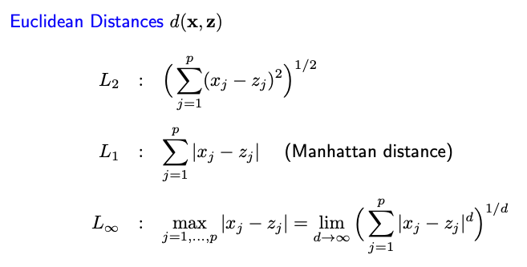

6.1. Distance Measures
6.1.1. Choice of Distance Measures
In clustering, the primary objective is to categorize samples or objects into clusters. Ideally, samples within the same cluster should be more alike compared to those in different clusters. Consequently, selecting the appropriate distance or similarity measure is vital.
In mathematical terms, a distance measure \(d(x,z)\) is a function between two points and must meet certain criteria:
It should always be non-negative, equating to zero only if the two samples are identical or equivalent: \(d(x,z) \ge 0\) and :math: d(x,z)=0 if and only if \(x = z\).
It must be symmetric: \(d(x,z) = d(z,x)\).
It should adhere to the triangle inequality: \(d(x,y) \le d(x,z) + d(z,y)\). This means the distance between points x and y should not exceed the combined distances of x to z and z to y. This essentially means the distance measures the shortest path between two points.
We’ll next explore popular distance measures for clustering that meet these criteria. However, in practice, it might suffice to choose measures that meet, for instance, the first two properties. These are often deemed reasonable for clustering.
For numerical features, the Euclidean distance is common. The L-infinity distance is the maximum absolute difference across all dimensions. Intriguingly, L-infinity distance resembles Ld distance when d approaches infinity.
{kind=link}
For non-numeric data like texts, non-Euclidean measures are useful. The Jaccard distance between two sets is 1 minus the fraction of their intersection’s size to their union’s size.
For example, the Jaccard distance between set {A, C, D, E} and set {A, D, E} is 1/4.
This can measure similarity between two sentences by converting each into a set of stemmed words.
“Cluster analysis arranges similar objects in the same group.”
“Cluster analysis divides data into groups.”
It’s also applicable to movies or restaurants by considering their sets of fans.
The Hamming distance calculates differences between two strings of equal length, counting mismatching positions. For example, the Hamming distance between ‘Karolin’ and ‘Kathrin’ is 3, and between 1011101 and 1001001 is 2. This is practical for texts of similar length or even DNA sequences.
Edit distance denotes the number of insertions or deletions needed to transform one string into another. For instance, converting x = abcde to y = bcduve might necessitate three edits.
Lastly, cosine distance is the angle between two vectors, ranging from 0 to 180 degrees or 0 to pi radians.
6.1.2. Multidimensional Scaling
Clustering algorithms typically accept two kinds of inputs. - The first is the original data matrix, denoted by an n-by-p matrix X, where ‘n’ represents the number of samples and ‘p’ stands for the features. - The second kind of input is an n-by-n distance or dissimilarity matrix D, which, for simplicity, we assume to be always symmetric.
There are methods to convert one type of input into the other. If provided with the data matrix X, we can easily compute the distance matrix D once a distance measure is chosen. However, converting in the opposite direction—deriving the data matrix X from an n-by-n distance matrix D—poses a more intricate challenge.
One method we’ll employ is known as multi-dimensional scaling (MDS). Let’s assume we have a pairwise squared l2 distance matrix D, where each entry \(d_{ij}\) is the squared l2 distance between two vectors, \(d_{ij} = \sum_{l=1}^p (x_{il} - x_{jl})^2\) Given D, can we retrieve the original n data points \(x_i\)?
It’s unrealistic to expect an exact retrieval of the original data points due to the invariant nature of distances; regardless of changes like shifting the origin or rotating coordinates, distances between two points remain constant. Thus, using the n-by-n pairwise distance matrix D, our aim is to reconstruct the n data points, modulo a translation or rotational transformation.
Can this be achieved? Absolutely. The procedure consists of two main steps, typically referred to as classical multi-dimensional scaling:
Double Centering Transformation: Begin by transforming the matrix D. Each entry \(d_{ij}\) undergoes a change – subtract the row mean, subtract the column mean, then add the overall mean, followed by multiplying by -1/2. The resulting matrix \(\tilde{D}\), remains symmetric, and is semi-positive definite.
{kind=link}
Retrieval using Decomposition: The double centering on D to get \(\tilde{D}\) makes \(\tilde{D}\) equivalent to \(X X^t\). This equivalence allows us to retrieve X through decomposition.
For dimensionality reduction, rather than employing all p dimensions of X derived from the decomposition of \(\tilde{D}\), one might opt to use only the top k dimensions, providing an approximation of the original data matrix X.
There are variations to the classical multidimensional scaling approach. Students interested in diving deeper can explore these alternative methods.